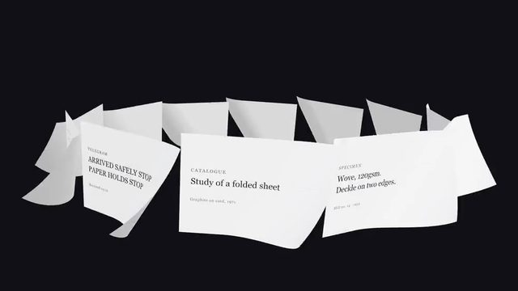
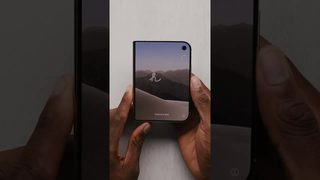
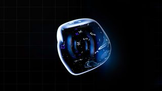
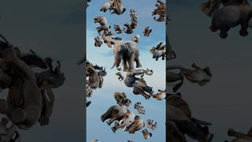

点封面在页面里播放（Vimeo / YouTube / X 需要代理；Vimeo 若没自动开始，再点一下播放键）。觉得好就点「喜欢」，有想法就写在下面的框里保存，我每天出日报前会读，存进偏好和审美库；会多找同类，但每天仍保持类型分散。
目录
- 01Everpure x Bloomberg TV 系列
- 02Paperlab：会折、会卷、会烧的纸
- 03Aave 通知开关弹窗
- 04R.EVISITED（Hublot 概念片）
- 05Dyson Clean+Wash Hygiene
- 06The Flattest Surface in the World
- －看完剔除的 4 条
- 拆今日细拆：Illo × Everpure
01MG数据可视化
Everpure x Bloomberg TV 系列
Illo · 10-19，90 秒 【看过视频】
 Vimeo
Vimeo好在哪90 秒几乎没有硬切，全靠形状变形和镜头推进换场：等轴测塔压扁成柱状图，再立回 3D 柱子。缓动顺滑，没有回弹，一种粉彩虹彩渐变是全片唯一的亮色
可借AI 科普里给「老系统 / AI / 方案」各配一种形状（硬方块、软 blob、两者融合），在 Remotion 里用形状接力代替切镜，细拆见文末
02代码动画3D质感
Paperlab：会折、会卷、会烧的纸
Noor Mtir · 10-18 【看过视频】

Codrops ↗Codrops 文章里的演示录屏拼接，共 47 秒，无声
好在哪纸是真 3D 网格，边烧边卷，灰烬和火星也在 3D 空间里飞，火光会照亮纸面。深色界面、米白纸、橙黄火，界面用无衬线，纸上用衬线
可借竖屏开场用 Three.js 让一页论文被点燃卷起，再露出标题，Remotion 用 @remotion/three 接进来。火光打到纸上这一下最值得抄
03UI动效3D质感
Aave 通知开关弹窗
Aave App（60fps 收录，具体设计师没署名） · 10-21，13 秒 【看过视频】
 X
X原帖无声
好在哪13 秒循环，3D 铃铛轻轻摆动。整屏深灰单色，只有一抹柔紫。铃铛是哑光材质，有自阴影和柔和投影，不靠发光撑效果
可借讲功能怎么开时，做「哑光 3D 小图标 + 一行字」的循环卡片。Three.js 里用高粗糙度材质加一盏柔光，不加辉光
043D质感剪辑节奏
R.EVISITED（Hublot 概念片）
Studio River · 9-29 上传，10-15 报道，68 秒 【看过视频】
好在哪节奏分三段：开头每镜 4 到 6 秒的远景，中段装表时约 1 秒一切、切在动作上，结尾 10 秒以上的英雄镜头。纯灰阶，冰、玻璃、水的折射配硬光，景深只用来引导视线
可借硬件片按「慢、快、慢」排节奏：慢镜立气氛，拆装段快切，成品留长镜。黑白加一盏硬光就够出质感
05剪辑节奏转场
Dyson Clean+Wash Hygiene
Optical Arts · 10-23，40 秒 【看过视频】
好在哪先给 5 秒大全景，然后跟着进行曲的鼓点 1 到 2 秒一切，每刀切在洗地机倒下的半途，下一镜接着倒。混凝土灰、米色木头配产品的蓝和铜，透视很大，阴影柔和
可借讲「连锁反应 / 训练流程」时，先全景再踩拍快切，让动作方向贯穿每一刀，镜头自己就连起来了
06知识讲解3D质感
The Flattest Surface in the World
Branch Education · 10-16，57 秒竖屏 【看过视频】
好在哪每镜 5 到 10 秒，在 3D 剖面里慢慢平移、推近，靠推镜换尺度，很少硬切，深色底板上的标签很好读。缺点是偏模板化，紫色激光的光晕快碰到「廉价发光」那条线
可借竖屏讲芯片时用「一路推近换尺度」代替切镜，每镜只放一个标签，光效收着用
看完剔除的 4 条

Marques Brownlee · 俯拍实拍加 1 到 3 秒的跳切，没有设计过的动效，没东西可借
Marques Brownlee · 看了前 2 分钟：常规口播加微距空镜，有漏光、1:13 的数码故障转场和大量微距虚化，全在不喜欢清单上

Ranger & Fox · 0.5 到 1 秒的乱切加分屏，发光漂浮的 DNA 和数学符号很俗套，等宽字和高反差衬线字混着用

Cleo Abram · Shorts 式快切加甩镜，黄绿底色块上的大字很吵，3D 大象直接贴在平面天空照片上，光是平的
今日细拆 · 第 1 条
Illo × Everpure 【看过视频】
看完全片后重写。下面的时间点和时长是看片记下的，颜色是从画面取的近似色，Remotion 里的参数是我给的起步值
结构：90 秒分三段
- 0:00–0:29 老存储：硬的深色几何体，裂成零散的图表
- 0:30–0:59 AI：粉彩虹彩的有机形状（blob、扫过的曲线），讲 AI 项目失败率高
- 1:00–1:29 方案：硬方块和虹彩质感融合，落在省成本、更稳定
关键动作
- 0:08 深色背景被擦掉，等轴测塔压扁、展开成 2D 柱状图，约 1.5 秒
- 0:11 计数器从 42% 滚到 43%，约 0.5 秒
- 0:13 平的柱子倾斜，变回 3D 柱子，约 2 秒
- 0:38 硬邦邦的胶囊扭成起伏的 blob，约 2 秒
- 0:44 柱状图顶部像金属贴纸一样被揭起，约 1.5 秒
转场
几乎不切，全靠形状接力：折线图变成台阶，台阶再变成 3D 方块，同一个东西一路变下去
缓动和镜头
平滑的贝塞尔曲线，没有过冲、没有回弹，滑到位后轻轻停住。镜头一直在推和摇，转场时加速，出字时放慢，留时间读
配色（近似色）
#111111 黑#FFFCF5 米白底#FEF7E5 四角更暖#383230 黑柱#785954 大数字暖棕#7A726F 小字灰
唯一的强调色是一种粉彩虹彩渐变，主要是桃色、浅蓝、浅黄，只出现在代表 AI 的东西上
#F6C9AE 桃（近似）#B9D3EE 浅蓝（近似）#F4E6A6 浅黄（近似）
字体
全大写等宽字，像终端里的字（字体未识别）
立体感从哪来
等轴测视角，平面按前后顺序叠放，背板下有柔和投影，没有真 3D 渲染的重材质
怎么复现（Remotion）
- 镜头：所有元素包进一个外层 div，
transform: translate(x, y) scale(s)，用 interpolate 让 s 从 1 慢慢推到 1.15。转场段让推进快一点，出字段放慢 - 缓动统一一种，不要回弹：
Easing.bezier(0.45, 0, 0.2, 1)，或者 spring({ frame, fps, config: { damping: 200 } })。别用低 damping 的弹簧 - 柱子 3D 和 2D 互变：每根柱子是顶、左、右 3 个 SVG 多边形，把侧面多边形的深度从 d 插值到 0，柱子就压成平面柱状图（30fps 下约 45 帧）。插回去就重新立起来（约 60 帧）
- 计数器：42 到 43 用 interpolate 在约 15 帧内完成，Math.round 取整，数字用 translateY 往上滚
- 形状接力：折线、台阶、方块用同一个元素，跨场景保留，插值它的路径点、位置和尺寸，不硬切
- blob：胶囊变 blob 用 SVG 路径插值（flubber 这类库生成插值函数，再喂进度），约 60 帧。要虹彩质感就用 Three.js ShaderMaterial，噪声配桃、蓝、黄三色
- 揭贴纸：柱顶那块单独拆出来，用 rotateX 加一道移动的高光，约 45 帧
鱼知道里怎么用
竖屏讲「为什么很多 AI 项目落不了地」：米白底，一组硬黑方块代表传统系统，镜头慢推，方块压扁成柱状图，右上角数字用真实数据滚动出来；下一句讲模型时，一个胶囊扭成虹彩 blob，最后和方块融到一起，全程不硬切
↑ 回到第 1 条看片Stash 报道 ↗